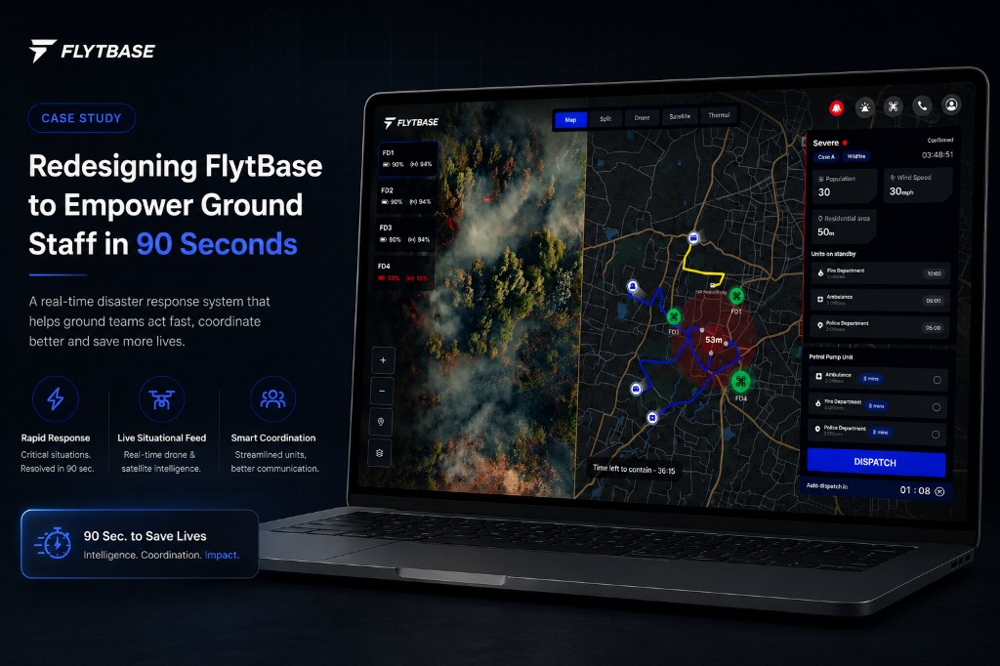
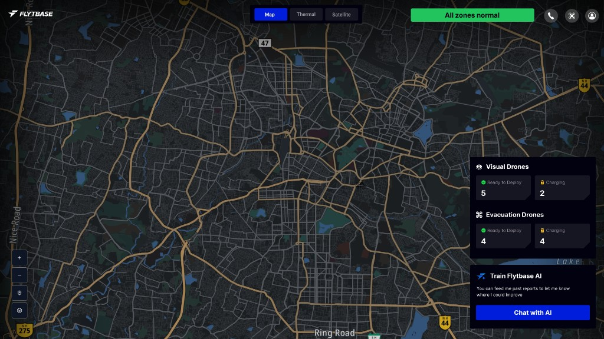
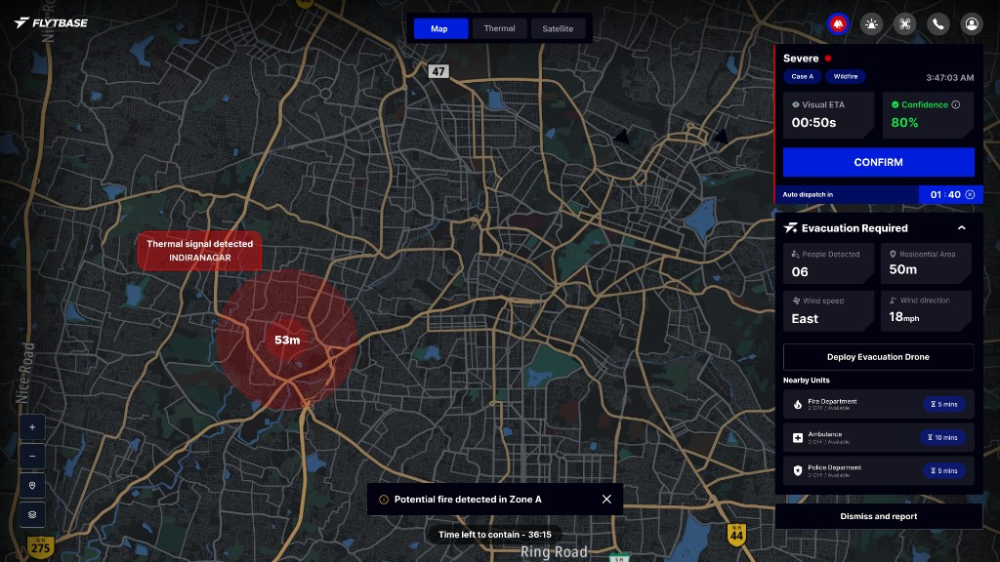
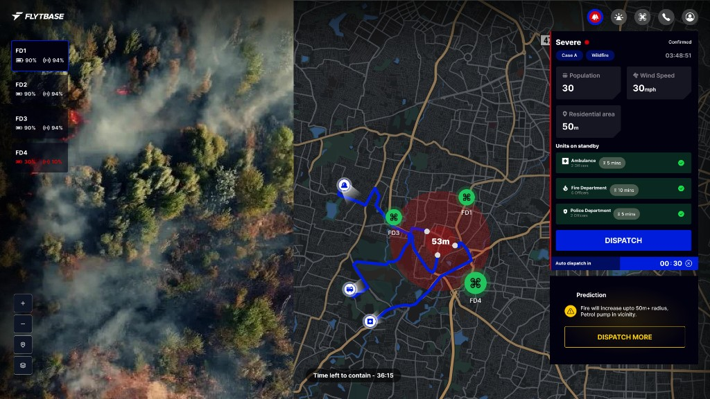
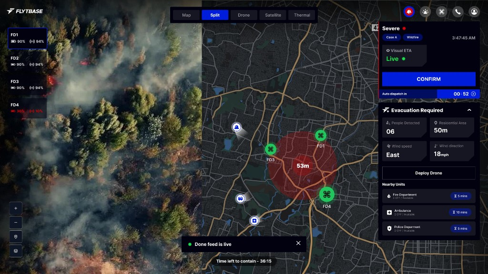
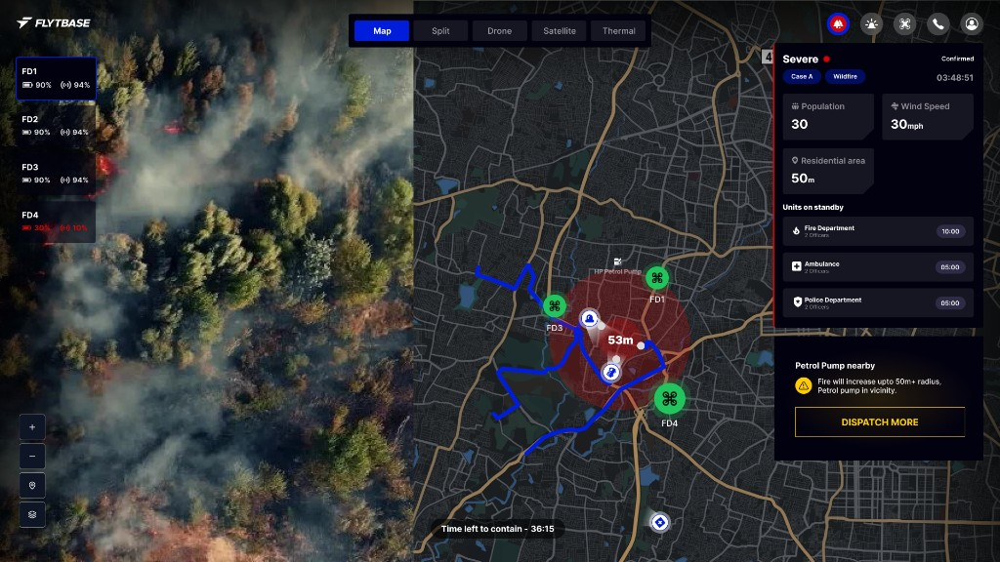

The old response
Detection → operator checks information → decision → ground teams respond.
Problem: This can take too long. In one researched scenario, coordinated response took ~48 minutes.
Helping operators make critical decisions in 90 seconds.
FlytBase can use autonomous drones and AI to detect emergencies, collect live information, and help response teams act faster.
Open Figma file →
Imagine it is 3:47 AM. A fire starts near homes. A sensor detects heat. Someone now has to figure out: Is it real? How serious is it? Where is it? Should we send help?
Detection → operator checks information → decision → ground teams respond.
Problem: This can take too long. In one researched scenario, coordinated response took ~48 minutes.
Thermal detection → AI validates → autonomous drone launches → live visual/thermal confirmation → operator decides → emergency teams receive information.
Goal: Reduce the journey from detection to coordinated response to approximately 90 seconds.
How might we reduce decision time without creating cognitive overload, false confidence, or loss of human control?
Cognitive overload means the brain gets too much information at once and slows down.
FlytBase is a platform for operating autonomous drones.
For this project, drones can provide:
Simple explanation: AI sees something → drone goes there → drone brings information back → human decides what happens next.
We used the Double Diamond, a UX method to discover widely, define the real problem, develop ideas, and deliver a solution.
Understand the emergency world
Find the biggest problems
Explore solutions
Move toward design
Research combined secondary/industry research, product audit, competitor analysis, and research-backed personas. No primary operator interviews were conducted during the project timeline.
Research mapped emergency response domains to find shared pain points across:
8 major challenges (simplified from research)
Research reviewed real incidents where interface design made emergencies worse.
Problem: Autopilot status was hard to see. Crew did not know how to turn it off under pressure.
Lesson: Make system mode/state obvious. Keep human control visible.
Problem: Critical action sent without confirmation. Similar options (TEST, DRILL, ALERT) looked alike.
Lesson: Make actions clear. Confirm risky actions before they run.
Problem: No way to mark resolved cases. Multiple ambulances sent to the same person.
Lesson: Track status clearly. Prioritize alerts so important ones are not buried.
Problem: Vague errors like “Malfunction 54.” Operators bypassed warnings they did not understand.
Lesson: Match system language to real-world meaning. Do not let people blindly trust automation.
We reviewed the existing FlytBase dashboard and found six problems:
Rahul decides. Priya coordinates. Aniket acts.
Single-Incident EOC Director
Multi-Incident Coordinator
Field Incident Commander
We did not design three unrelated products. Same underlying data, different information for each operator.
Analogy: Three people are looking at the same emergency, but each person needs a different amount of information.
Jobs to be Done means the real tasks a person needs to finish, not just what the screen shows.
ALERT → COORDINATION → DOCUMENTATION
Instead of asking how the dashboard should look, we asked what the operator needs at each moment.
Question: What must be visible immediately?
Decision: Severity, confidence, location, live data, recommendation.
Question: What happens when confidence is low?
Decision: Show evidence, request more data, recommend instead of auto-execute, pause risky actions.
Question: What happens when another emergency appears?
Decision: Prioritize by severity, collapse secondary information, protect attention.
Question: How do we tell the operator to act now?
Decision: Strong alert, dominant CTA, countdown/audio/haptic when appropriate.
Ideas were evaluated by how much time they can save and what could go wrong.
Design for the decision, not the dashboard.
Final screens will be added here. Each decision covers the problem, design decision, and why it helps.

Problem: Operators lose seconds scanning cluttered screens.
Design decision: Show severity, location, live feed access, and one clear recommendation first.
Why it helps: The operator understands the situation in the first 5 seconds.

Problem: All alerts felt the same in the old dashboard.
Design decision: Color-coded severity and urgent alert states at the top.
Why it helps: Serious emergencies stand out immediately.

Problem: Operators did not know why AI flagged an alert.
Design decision: Show what AI thinks, why it thinks it, and how confident it is.
Why it helps: Builds trust without blind faith in automation.

Problem: Sensor data alone is not enough to confirm a real fire.
Design decision: Live visual + thermal feed within reach of the alert.
Why it helps: Visual confirmation reduces false alarms and hesitation.

Problem: Location, teams, and risks were spread across panels.
Design decision: One map showing fire, drones, teams, risks, and routes.
Why it helps: Spatial awareness without jumping between screens.
Problem: Manual coordination between departments wasted time.
Design decision: Dispatch panel with crew status, recommendations, and acknowledgment tracking.
Why it helps: Operators coordinate teams without leaving the incident view.
Problem: Manual takeover was hard to find under stress.
Design decision: Always-visible override and pause controls.
Why it helps: Humans stay in control when automation is wrong or uncertain.
Problem: A second alert could split attention with no priority logic.
Design decision: Severity-based stacking. Secondary panels collapse for the more urgent incident.
Why it helps: Attention stays on what matters most.
Problem: Field commanders need fast tactical intel, not EOC-level detail.
Design decision: Simpler mobile view with drone feed, crew map, wind/fire data, and large actions.
Why it helps: Aniket can act in the field without reading a complex dashboard.
Problem: One interface cannot serve three different roles.
Design decision: Same system, tailored views for strategic, coordination, and tactical roles.
Why it helps: Each operator gets the right information at the right level.
These are the metrics we would use to measure success. Testing results are not yet available, and we do not claim the design improved these numbers.
SUS is a standard survey that measures how easy a system feels to use.
FlytBase already has powerful autonomous-drone technology. The design challenge was making that technology understandable and useful when people are under pressure.
Design for the decision, not the dashboard.